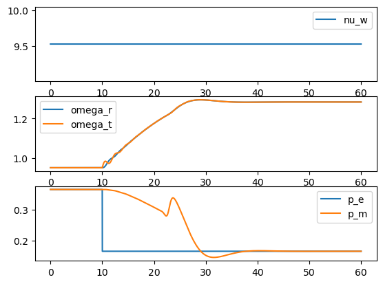
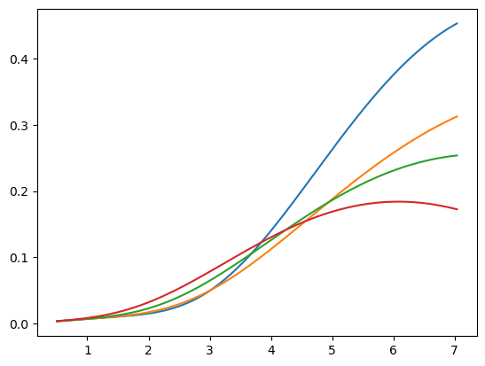
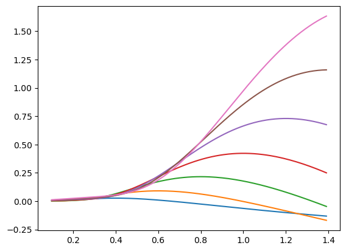
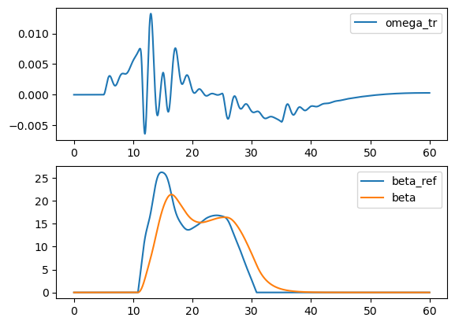

Wind power#
import numpy as np
import matplotlib.pyplot as plt
Aerodinamic model#
\[\lambda = \lambda_b\left( \frac{\omega_w/\omega_b}{\nu_w/\nu_{wb}} \right)\]
\[ \frac{1}{\lambda_i} = \frac{1}{\lambda + 0.08\beta} - \frac{0.035}{\beta^3 + 1.0} \]
\[c_p = C_1 \left(C_2 \frac{1}{\lambda_i} - C_3 \beta - C_4\right) e^\left(-C_5 \frac{1}{\lambda_i}\right) + C_6 \lambda \]
\[c_p^{pu} = \frac{c_p}{c_{pb}}\]
\[p_m = K_p c_p^{pu} \left(\frac{\nu_w}{\nu_{wb}}\right)^3\]
MPPT#
\[\hat \nu_w = \nu_{wb}\frac{\omega_t}{\omega_b}\]
\[ \frac{1}{\hat \lambda_i} = \frac{1}{\lambda_{opt}} - 0.035 \]
\[\hat c_p = C_1 \left(C_2 \frac{1}{\hat \lambda_i} - C_4\right) e^\left(-C_5 \frac{1}{\hat \lambda_i}\right) + C_6 \lambda_{opt} \]
\[\hat c_p^{pu} = \frac{\hat c_p}{c_{pb}}\]
\[\hat p_m = K_p \hat c_p^{pu} \left(\frac{\hat \nu_w}{\nu_{wb}}\right)^3\]
Two mass drive train#
\[
\dot \theta_{tr} = \omega_t-\omega_r
\]
\[\dot \omega_t = \frac{1}{2 H_t}\left(p_m - K_{tr} \theta_{tr} - D_{tr}\left(\omega_t-\omega_r\right)\right)\]
\[\dot \omega_r = \frac{1}{2 H_r}\left(K_{tr} \theta_{tr} + D_{tr}\left(\omega_t-\omega_r \right) -p_e\right)\]
def Piecewise(*args):
for item in args:
if item[1]: return item[0]
beta = 0.0
C_1 = 0.5176
C_2 = 116
C_3 = 0.4
C_4 = 5.0
C_5 = 21
C_6 = 0.0068
nu_w_b = 12
lam_b = 8.1
lam_opt = lam_b
omega_b = 1.2
c_p_b = 0.48
K_p = 0.73
lam = lam_b
inv_lam_i = 1/(lam + 0.08*beta) - 0.035/(beta**3 + 1.0)
c_p = C_1*(C_2*inv_lam_i - C_3*beta - C_4)*np.exp(-C_5*inv_lam_i) + C_6*lam
c_p_pu = c_p/c_p_b # (pu)
#p_m_ref = K_p*c_p*(nu_w/nu_w_b)**3
p_ref = 0.657/0.9
nu_w_0 = (p_ref/(K_p*c_p_pu))**(1.0/3.0)*nu_w_b
omega_w_0 = lam*(nu_w_0/nu_w_b)/lam_b*omega_b
print(f'nu_w_0 = {nu_w_0}, omega_w_0 = {omega_w_0}')
nu_w_0 = 11.999900814053506, omega_w_0 = 1.1999900814053506
Dt = 0.01
times = np.arange(0,60.0,Dt)
N_t = len(times)
N_x = 5
U = np.zeros((N_t,1))
X = np.zeros((N_t,N_x))
Z = np.zeros((N_t,10))
# parameters tool
C_1 = 0.5176
C_2 = 116
C_3 = 0.4
C_4 = 5.0
C_5 = 21
C_6 = 0.0068
nu_w_b = 12
lam_b = 8.1
omega_b = 1.2
K_p = 0.73
## 2 mass mechanical model
omega_ref = 2*np.pi*0.5
zeta_ref = 0.05
H_t =3.0
H_r =1.0
K_tr = 2*H_r*H_t*omega_ref**2/(H_r + H_t)
D_tr = 4*np.pi*H_r*H_t*zeta_ref*omega_ref/(H_r + H_t)
## c_p_b:
beta_b = 0.0
lam = lam_b
inv_lam_i = 1/(lam + 0.08*beta_b) - 0.035/(beta_b**3 + 1.0)
c_p_b = C_1*(C_2*inv_lam_i - C_3*beta_b - C_4)*np.exp(-C_5*inv_lam_i) + C_6*lam
T_beta = 2.0
K_beta = 100.0
T_mppt = 5
# initial conditions
beta = 0.0 # initial input
p_ref = 0.5*0.657/0.9 # initial input
inv_lam_i = 1/(lam + 0.08*beta) - 0.035/(beta**3 + 1.0)
c_p = C_1*(C_2*inv_lam_i - C_3*beta - C_4)*np.exp(-C_5*inv_lam_i) + C_6*lam
c_p_pu = c_p/c_p_b # (pu)
#p_m_ref = K_p*c_p*(nu_w/nu_w_b)**3
nu_w_0 = (p_ref/(K_p*c_p_pu))**(1.0/3.0)*nu_w_b
omega_w_0 = lam*(nu_w_0/nu_w_b)/lam_b*omega_b
print(f'nu_w_0 = {nu_w_0}, omega_w_0 = {omega_w_0}')
x = np.array([p_ref/K_tr, omega_w_0, omega_w_0, beta,p_ref]).reshape(N_x,1)
nu_w = nu_w_0
Dp_e_ref = 0
nu_w = nu_w_0
for it,t in enumerate(times):
# inputs
#t_pert_1 = 5.0
#if t>t_pert_1 and t<(t_pert_1+10):
# nu_w = (0.1*(t-t_pert_1) + 1.0)*nu_w_0
#
#t_pert_2 = 25.0
#if t>t_pert_2 and t<(t_pert_2+10):
# nu_w = (0.1*10 - 0.1*(t-t_pert_2) + 1.0)*nu_w_0
if t>10:
Dp_e_ref = -0.2
theta_tr, omega_t, omega_r, beta,p_m_mppt_lpf = x
#auxiliar
## model
lam = lam_b*(omega_t/omega_b)/(nu_w/nu_w_b) # pu
inv_lam_i = 1/(lam + 0.08*beta) - 0.035/(beta**3 + 1.0)
c_p = C_1*(C_2*inv_lam_i - C_3*beta - C_4)*np.exp(-C_5*inv_lam_i) + C_6*lam
c_p_pu = c_p/c_p_b # (pu)
p_m = K_p*c_p_pu*(nu_w/nu_w_b)**3
## MPPT
beta_mppt = 0.0
nu_w_mppt = nu_w_b*(omega_t/omega_b)
inv_lam_i_mppt = 1/(lam_opt) - 0.035
c_p_mppt = C_1*(C_2*inv_lam_i_mppt - C_3*beta_mppt - C_4)*np.exp(-C_5*inv_lam_i_mppt) + C_6*lam_opt
c_p_mppt_pu = c_p_mppt/c_p_b # (pu)
p_m_mppt_ref = K_p*c_p_mppt_pu*(nu_w_mppt/nu_w_b)**3
K_mppt = 1.0
omega_r_th = 0.2
#if np.abs(Dp_e)>0.01 and omega_r>omega_r_th:
# p_m_mppt = p_m_mppt_lpf
# K_mppt = 0.0
#else:
# p_m_mppt = p_m_mppt_ref
# K_mppt = 1.0
# Dp_e = Dp_e_ref * (1 + 50*(omega_r - omega_r_th))
np.abs(Dp_e_ref)>0.01 and omega_r>omega_r_th
mode_remote =
test_1 = np.abs(Dp_e_ref)>0.01 and omega_r>omega_r_th
p_m_mppt = PieceWise([(test_1,p_m_mppt_lpf), (True,p_m_mppt_ref)])
K_mppt = PieceWise([(test_1,0.0), (True,1.0)])
Dp_e = PieceWise([(test_1,Dp_e_ref), (True,Dp_e_ref * (1 + 50*(omega_r - omega_r_th)))])
#p_m_mppt = PieceWise([(Dp_e<0.01,0.0), (Dp_e>0.01,0.0),(True,p_m_mppt_ref)])
p_e = p_m_mppt_lpf + Dp_e
## pitch control
beta_ref = PieceWise([(omega_r<=omega_b,0.0), (omega_r>omega_b,K_beta*(omega_r-omega_b)),(True,0.0)])
# differential equations
dtheta_tr = omega_t-omega_r
domega_t = 1.0/(2*H_t)*(p_m - K_tr*theta_tr - D_tr*(omega_t-omega_r))
domega_r = 1.0/(2*H_r)*(K_tr*theta_tr + D_tr*(omega_t-omega_r) - p_e)
dbeta = 1.0/T_beta*(beta_ref - beta)
dp_m_mppt_lpf = K_mppt/T_mppt*(p_m_mppt - p_m_mppt_lpf)
f = np.array([dtheta_tr,domega_t,domega_r,dbeta,dp_m_mppt_lpf])
# outputs
x += Dt*f
U[it,0] = nu_w
X[it,:] = x[:,0]
Z[it,0] = nu_w
Z[it,1] = omega_r
Z[it,2] = p_e
Z[it,3] = p_m
Z[it,4] = beta_ref
Cell In[4], line 101
mode_remote =
^
SyntaxError: invalid syntax
fig,axes = plt.subplots(nrows=3)
axes[0].plot(times, Z[:,0], label='nu_w')
axes[1].plot(times, X[:,1], label='omega_r')
axes[1].plot(times, X[:,2], label='omega_t')
axes[2].plot(times, Z[:,2], label='p_e')
axes[2].plot(times, Z[:,3], label='p_m')
for ax in axes:
ax.legend()

def p_m_eval(c_p,nu_w):
K_p = 1.0
nu_w_b = 12
p_m = K_p*c_p*(nu_w/nu_w_b)**3
return p_m
def c_p_eval(nu_w,omega_w,beta):
'''
nu_w wind speed (pu)
omega_w rotor speed (pu)
beta blade pitch angle
'''
C_1 = 0.5176
C_2 = 116
C_3 = 0.4
C_4 = 5.0
C_5 = 21
C_6 = 0.0068
nu_w_b = 12
lam_b = 8.1
omega_b = 1.2
lam = lam_b*(omega_w/omega_b)/(nu_w/nu_w_b) # pu
inv_lam_i = 1/(lam + 0.08*beta) - 0.035/(beta**3 + 1.0)
c_p = C_1*(C_2*inv_lam_i - C_3*beta - C_4)*np.exp(-C_5*inv_lam_i) + C_6*lam # (pu)
return c_p
fig,axes = plt.subplots(nrows=1)
omega_ws = np.arange(0.1,1.4,0.01)
for beta in [0,5,10,15]:
nu_w_b = 12
lam_b = 8.1
omega_b = 1.2
c_ps = c_p_eval(nu_w,omega_ws,beta)
lams = lam_b*(omega_ws/omega_b)/(nu_w/nu_w_b)
axes.plot(lams, c_ps)

fig,axes = plt.subplots(nrows=1)
omega_ws = np.arange(0.1,1.4,0.01)
beta = 0.0
for nu_w in [4,6,8,10,12,14,16]:
c_ps = c_p_eval(nu_w,omega_ws,beta)
p_ms = p_m_eval(c_ps,nu_w)
axes.plot(omega_ws, p_ms)
---------------------------------------------------------------------------
TypeError Traceback (most recent call last)
~\AppData\Local\Temp/ipykernel_26832/2521658658.py in <module>
6
7 c_ps = c_p_eval(nu_w,omega_ws,beta)
----> 8 p_ms = p_m_eval(c_ps,nu_w)
9
10 axes.plot(omega_ws, p_ms)
TypeError: p_m_eval() missing 1 required positional argument: 'beta'

def p_m_eval(nu_w,omega_w,beta):
'''
nu_w wind speed (pu)
omega_w rotor speed (pu)
beta blade pitch angle
'''
C_1 = 0.5176
C_2 = 116
C_3 = 0.4
C_4 = 5.0
C_5 = 21
C_6 = 0.0068
nu_w_b = 12
lam_b = 8.1
omega_b = 1.2
K_p = 0.73
#c_p_b:
beta_b = 0.0
lam = lam_b
inv_lam_i = 1/(lam + 0.08*beta_b) - 0.035/(beta_b**3 + 1.0)
c_p_b = C_1*(C_2*inv_lam_i - C_3*beta_b - C_4)*np.exp(-C_5*inv_lam_i) + C_6*lam
## model
lam = lam_b*(omega_w/omega_b)/(nu_w/nu_w_b) # pu
inv_lam_i = 1/(lam + 0.08*beta) - 0.035/(beta**3 + 1.0)
c_p = C_1*(C_2*inv_lam_i - C_3*beta - C_4)*np.exp(-C_5*inv_lam_i) + C_6*lam
c_p_pu = c_p/c_p_b # (pu)
p_m = K_p*c_p_pu*(nu_w/nu_w_b)**3
## MPPT
beta_mppt = beta
lam_opt = lam_b
lam = lam_opt
nu_w = nu_w_b*lam_b*(omega_w/omega_b)/lam
inv_lam_i = 1/(lam + 0.08*beta_mppt) - 0.035/(beta_mppt**3 + 1.0)
c_p = C_1*(C_2*inv_lam_i - C_3*beta_mppt - C_4)*np.exp(-C_5*inv_lam_i) + C_6*lam
c_p_pu = c_p/c_p_b # (pu)
p_m_mppt = K_p*c_p_pu*(nu_w/nu_w_b)**3
return p_m,c_p,p_m_mppt
def mppt(omega_w,beta):
'''
nu_w wind speed (pu)
omega_w rotor speed (pu)
beta blade pitch angle
'''
C_1 = 0.5176
C_2 = 116
C_3 = 0.4
C_4 = 5.0
C_5 = 21
C_6 = 0.0068
nu_w_b = 12
lam_b = 8.1
omega_b = 1.2
K_p = 0.73
c_p_b = 0.48
omega_w = 1.0
nu_w = 12
beta = 12
p_m_eval(nu_w,omega_w,beta) # p_m,c_p,p_m_mppt
(0.3407801694745414, 0.2081283478905837, 0.18317169001911612)
omega_w = 1.2
nu_w = 12
C_1 = 0.5176
C_2 = 116
C_3 = 0.4
C_4 = 5.0
C_5 = 21
C_6 = 0.0068
nu_w_b = 12
lam_b = 8.1
omega_b = 1.2
K_p = 0.73
lam = lam_b*(omega_w/omega_b)/(nu_w/nu_w_b) # pu
lam
8.1
fig,axes = plt.subplots(nrows=1)
omega_ws = np.arange(0.1,1.4,0.01)
beta = 0.0
for nu_w in [4,6,8,10,12,14,16]:
p_ms,c_ps,p_m_mppts = p_m_eval(nu_w,omega_ws,beta)
axes.plot(omega_ws, p_ms)

fig,axes = plt.subplots(nrows=2)
axes[0].plot(times, X[:,1]-X[:,2], label='omega_tr')
axes[1].plot(times, Z[:,4], label='beta_ref')
axes[1].plot(times, X[:,3], label='beta')
for ax in axes:
ax.legend()
#ax.set_xlim(20,30)

# non simplified MPPt, beta can e diffrent from 0
# but with beta different from zero it is not working well (inestable)
beta_mppt = 0.0
nu_w_mppt = nu_w_b*lam_opt*(omega_t/omega_b)/lam_opt
inv_lam_i_mppt = 1/(lam_opt + 0.08*beta_mppt) - 0.035/(beta_mppt**3 + 1.0)
c_p_mppt = C_1*(C_2*inv_lam_i_mppt - C_3*beta_mppt - C_4)*np.exp(-C_5*inv_lam_i_mppt) + C_6*lam_opt
c_p_mppt_pu = c_p_mppt/c_p_b # (pu)
p_m_mppt = K_p*c_p_mppt_pu*(nu_w_mppt/nu_w_b)**3
import sympy as sym
H_t,H_r,K_tr,D_tr = sym.symbols('H_t,H_r,K_tr,D_tr', real=True)
theta_tr,omega_t,omega_r,omega_tr = sym.symbols('theta_tr,omega_t,omega_r,omega_tr', real=True)
dtheta_tr,ddtheta_tr = sym.symbols('dtheta_tr,ddtheta_tr', real=True)
p_t,p_e,p_te = sym.symbols('p_t,p_e,p_te', real=True)
p_t,p_e,p_te = sym.symbols('p_t,p_e,p_te', real=True)
zeta_ref,omega_ref = sym.symbols('zeta_ref,omega_ref', real=True)
#dtheta_tr = 2*sym.pi*(omega_tr)
omega_tr = dtheta_tr/(2*sym.pi)
domega_t = 1/(2*H_t)*(p_te - K_tr*theta_tr + D_tr*omega_tr)
domega_r = 1/(2*H_r)*(K_tr*theta_tr - D_tr*omega_tr)
eq = sym.collect(ddtheta_tr - sym.expand(sym.simplify(domega_t-domega_r)),[theta_tr,omega_tr])
str(eq)
'ddtheta_tr + dtheta_tr*(-D_tr/(2*H_t) - D_tr/(2*H_r))/(2*pi) + theta_tr*(K_tr/(2*H_t) + K_tr/(2*H_r)) - p_te/(2*H_t)'
(2*H_r*p_t - 2*H_t*p_e)/(4*H_t*H_r)
\[\displaystyle \frac{2 H_{r} p_{t} - 2 H_{t} p_{e}}{4 H_{r} H_{t}}\]
# dtheta * (D_tr/(2*H_t) + D_tr/(2*H_r))
omega = sym.sqrt((K_tr/(2*H_t) + K_tr/(2*H_r)))
zeta = (-D_tr/(2*H_t) - D_tr/(2*H_r))/(2*sym.pi)/omega
sol = sym.solve([omega-omega_ref,zeta-zeta_ref],[K_tr,D_tr])
sol
[(2*H_r*H_t*omega_ref**2/(H_r + H_t),
-4*pi*H_r*H_t*zeta_ref*Abs(omega_ref)/(H_r + H_t))]
omega_ref = 2*np.pi*1
zeta_ref = 0.1
H_t = 3.0
H_r = 1.0
K_tr = 2*H_r*H_t*omega_ref**2/(H_r + H_t)
D_tr = -4*np.pi*H_r*H_t*zeta_ref*omega_ref/(H_r + H_t)
K_tr
59.21762640653615
domega_t - domega_r = (2*H_r*(p_m - K_tr*theta_tr) - 2*H_t*(p_m - K_tr*theta_tr))
domega_tr = (2*H_r*p_m/(4*H_t*H_r) - 2*H_r/(4*H_t*H_r)*K_tr*theta_tr - 2*H_t*p_m/(4*H_t*H_r) - 2*H_t/(4*H_t*H_r)*K_tr*theta_tr)
n=3
Piecewise((2,n>2),(4,True))
2